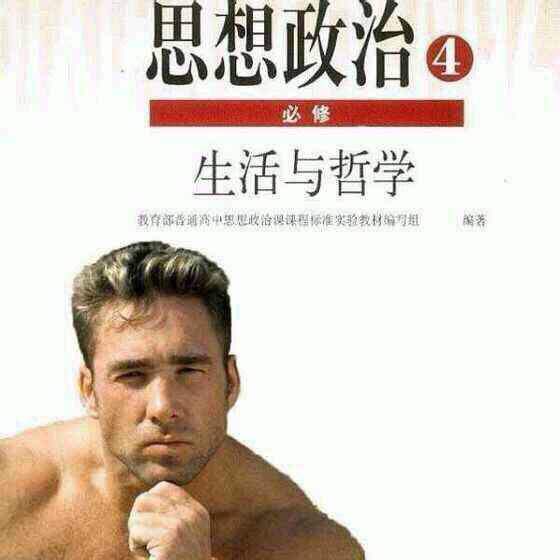

比利.海灵顿
本书是Billy Herrington跤授于2018年3月4日作，本书是一本自传体小说，比利通过强大的文笔使其著名的摔角运动跨越文本载体的限制，让读者通过书本的方式“听到，看到，触碰到”摔角的精彩。该书以CN20年代初期到20年代中期为背景，通过紧张艰难的web期末答辩，以主人公春树为中心，刻画了当时凡巾与电脑小白人物形象，深刻展现了web学习的艰难。
本书主要讲述春树认真积极准备答辩，却只得到60分，虽然少年灰心丧气，依然提交此作业，因为他知道生活有时会欺骗你，巾凡大人最终一定会给予更好的评价。